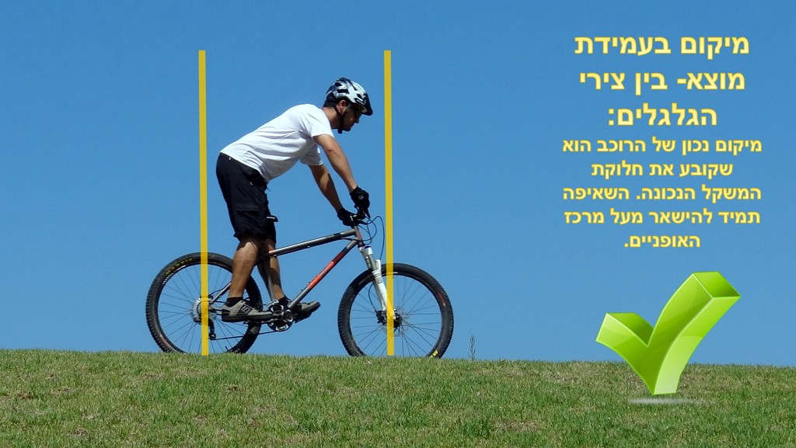

עמידת מוצא נכונה מאפשרת לשלושה עקרונות חשובים להתממש. הראשון- חלוקת משקל נכונה על האופניים, בה שני הצמיגים מקבלים לחץ אל הקרקע, אחיזה, היגוי ובלימה. השני- גם קשור לחלוקת משקל ומיקום על האופניים – עמידה נכונה מונעת כמעט לחלוטין אפשרות של התהפכות מעבר לכידון. השלישי- הפרדת האופניים מהגוף וניהול האנרגיה שמגיעה מהשטח, עמידת מוצא היא השיכוך העיקרי שלנו ובלעדיה כל קפל קרקע משפיע על היציבות שלנו באופן דרמטי.
שליטה במהירות
לכל אחד מאיתנו תחום נוחות מסוים, לרוכב מתחיל נוח במהירות X ולרוכב מאוד מנוסה נוח במהירות Y. לא מדובר במספר אבסולוטי, אלא בעניין אינדיבידואלי לחלוטין. שליטה במהירות מאפשרת לנו להישאר בתחום בו אנחנו מסוגלים לנהל את עצמנו ללא לחץ ופחד. מהירות גבוהה מדי תגרום לנו ללחץ, וכשאנחנו לחוצים או מפוחדים, אין מקום יותר לטכניקה נכונה. נגעתי בנושא במאמר על למצוא את הזרימה.
מבט מנחה גוף
לאן שאנחנו מסתכלים, אנחנו מגיעים. לא ניכנס במאמר הזה על איך בדיוק העניין הזה עובד, אבל הניסוי הכי פשוט שאפשר לעשות הוא לצעוד ברחוב. תשימו לב שאתם לא מסתכלים איפה כל רגל דורכת בכל צעד, אלא המבט שלנו תמיד מוביל אותנו קדימה אל הנקודה הבאה אליה נרצה להגיע- אם זה ראש גרם המדרגות, הצד השני של הכביש או המקרר בבית. כך גם בשטח, אם לא נסתכל על המשך הדרך ונקבע בכל נקודת זמן מטרה להגיע אליה – נעצור במכשול הכי קרוב.
נסכם
אז הבנתם כיצד כל אחד מהעקרונות במעגל השליטה משפיעים עלינו, אך חשוב לזכור שהם גם תלויים אחד בשני, "קריסה" של עקרון אחד מספיקה להביא אותנו לאבדן שליטה, אך סביר להניח שגם תשפיע על כל ההתנהלות שלנו, הנה לדוגמא: רוכב נכנס לירידה עם קצת דרדרת וכמה סלעים. הרוכב לא הכין את עצמו לירידה בזמן ונכנס אליה מהר מדי (נפגע עקרון השליטה במהירות). בגלל תחושת המהירות הגבוהה מדי, משתלט הפחד על הרוכב, ובמקום להיות אסרטיבי על הבלמים ועמידת המוצא, הפחד גורם לרוכב להיצמד ולחבוק את שלדת האופניים (נפגע עקרון עמידת המוצא). עכשיו הרוכב נמצא במהירות גבוהה מדי לטעמו, ו"חוטף" כל אבן בשביל מכיוון שאינו בעמידת מוצא נכונה – כל החוויה גורמת לרוכב קושי לשמור על כיוון, ותחושת אבדן השליטה מפחידה עד כדי שהרוכב מתמקד דווקא בעץ שנמצא בכלל מחוץ לסיבוב (המבט כבר לא על השביל). מכאן אתם יכולים לנחש את ההמשך… תסריט זה הינו למעשה די נפוץ, אך קל יותר ממה שאתם חושבים להישאר תמיד בשליטה! איך עושים את זה- פשוט שימרו על שלושת העקרונות: עמידת מוצא- לימדו עמידת מוצא נכונה, והקפידו להיות בעמידת מוצא בכל זמן שבו לא צריך לשבת ולדווש. שליטה במהירות- תמיד הישארו במהירות שנוחה לכם, אם אתם מגיעים לקראת ירידה, קבעו מהירות נוחה לפני תחילת הירידה ורק שימרו עליה תוך כדי. מבט מנחה גוף- עיניים תמיד על הפתרון ולא על הבעיה. הסתכלו לאן צריך להגיע ולשם תגיעו, התעלמו ממכשולים ובעיות שבכלל לא נמצאים בנתיב ההתקדמות שלכם. אם תמיד תקפידו על שלושת העקרונות האלו בו זמנית, תמיד תהיו בשליטה. אם איבדתם שליטה, עכשיו אתם יודעים לבדוק מה השתבש.


אנדריי שינדלר
רוכב ומדריך אופניים מנוסה